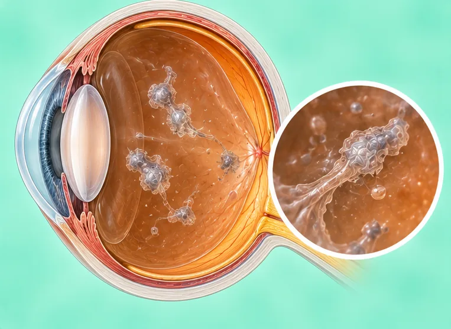
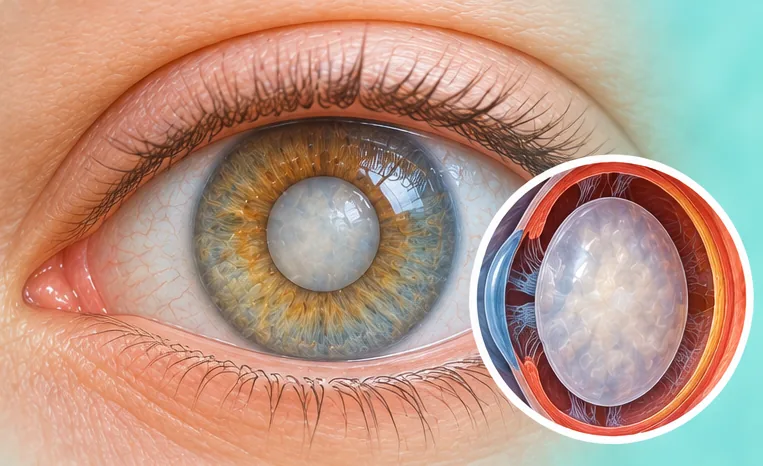

Mata
57 keadaan dan gejala
 Astigmatisme
Astigmatisme Atrofi saraf optik
Atrofi saraf optik Benjolan pada kelopak mata (kalazion)
Benjolan pada kelopak mata (kalazion)
Bintik terapung di mata- Bintik terapung di mata (kekeruhan vitreus)
 Blefaritis (tepi kelopak mata meradang)
Blefaritis (tepi kelopak mata meradang)- Bulu mata tumbuh ke dalam (trikiasis)
- Buta salji (fotokeratitis)
- Degenerasi makula
- Degenerasi makula berkaitan usia (AMD)
 Glaukoma
Glaukoma- Glaukoma akut
- Iridosiklitis (uveitis anterior)
- Juling (strabismus)
- Juling ke luar berselang-seli (eksotropia)

Katarak- Kayap pada kelopak mata (herpes zoster)
- Kelopak mata atas terkulai (ptosis)
- Keradangan kornea (keratitis)
- Keratokonus
- Ketumbit (hordeolum)
- Konjunktivitis (mata merah)
- Konjunktivitis bakteria (mata merah)
- Konjunktivitis virus (mata merah)
- Konkresi konjunktiva (batu pada mata)
- Koyakan atau lubang retina
- Lipatan epikantus
- Mata kering
- Mata malas (ambliopia)
- Mata merah (konjunktivitis)
- Mata merah akut (konjunktivitis)
- Neuritis optik
- Nistagmus (gerakan mata tidak terkawal)
- Penglihatan berganda (diplopia)
- Penyakit kornea
- Penyakit makula
- Pinguekula (benjolan kekuningan pada mata)
- Pterigium (tisu tumbuh di permukaan mata)
- Rabun dekat (hiperopia)
- Rabun jauh (miopia)
- Rabun jauh palsu (pseudomiopia)
- Rabun jauh sebenar (miopia)
- Rabun jauh teruk (miopia tinggi)
- Rabun tua (presbiopia)
- Radang kantung air mata (dakriosistitis)
- Radang kelenjar air mata (dakrioadenitis)
- Ralat biasan (rabun jauh atau dekat, astigmatisme)
- Retina tertanggal (ablasio retina)
- Retinitis pigmentosa
- Retinopati diabetik
- Saluran air mata tersumbat
- Skleritis (radang bahagian putih mata)
- Sumbatan vena retina (oklusi vena retina)
- Tekanan mata tinggi (hipertensi okular)
- Trakoma (jangkitan mata)
- Ulser kornea
- Uveitis (radang bahagian dalam mata)